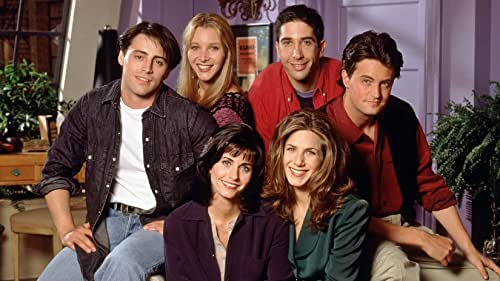
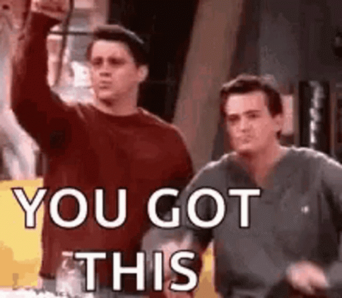

Fun facts about Friends

Are you a super fan of Friends?
Yes?
No? ..
just kidding!
100% a huge fan!

-
What was the original name of this TV Show?
- A. Six of One
- B. Friends Like Us
- C. Insomnia Cafe
- D. Friends
-
Where the show was filmed?
- A. New York
- B. Boston
- C. Hollywood, California
- D. Washington
-
Who were NOT main characters in the original draft?
- A. Monica and Joey
- B. Pheobe and Chandler
- C. Ross and Rachel
- D. Joey and Ross
-
Who almost didn't do the final season?
- A. Jennifer Aniston
- B. Courteney Cox
- C. Matt LeBlanc
- D. Lisa Kudrow
You made it, now check if you got it right!
See answer key
